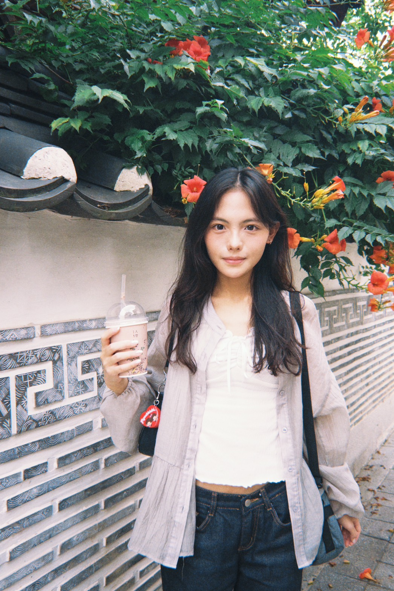
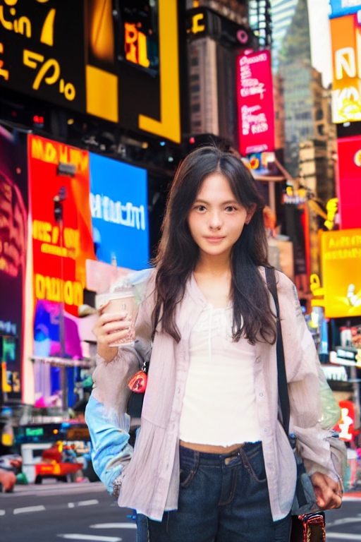
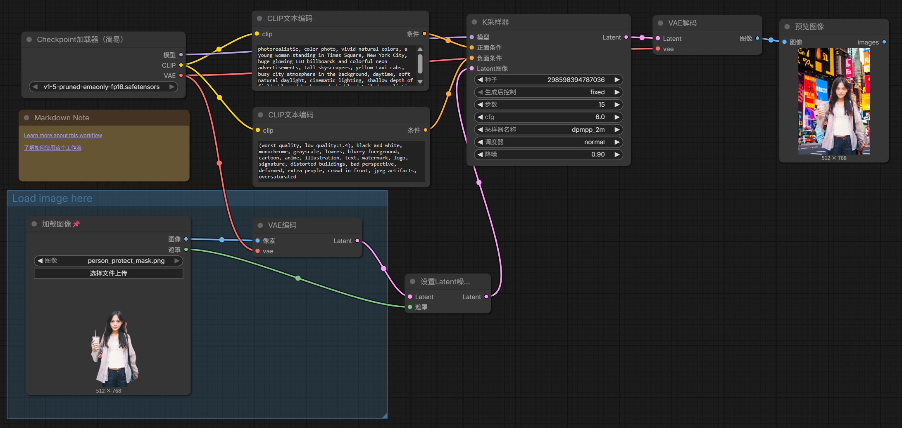

原圖：

生成的圖：

我把背景換成了紐約時代廣場，人沒有變。
一開始臉會變，後來用了遮罩，只改背景，臉就保留下來了。
完整工作流截圖：

正面提示詞：photorealistic, color photo, vivid natural colors, a young woman standing in Times Square, New York City, huge glowing LED billboards and colorful neon advertisements, tall skyscrapers, yellow taxi cabs, busy city atmosphere in the background, daytime, soft natural daylight, cinematic lighting, shallow depth of field, blurred background, highly detailed, realistic
負面提示詞：(worst quality, low quality:1.4), black and white, monochrome, grayscale, lowres, blurry foreground, cartoon, anime, illustration, text, watermark, logo, signature, distorted buildings, bad perspective, deformed, extra people, crowd in front, jpeg artifacts, oversaturated
denoise 用的是 0.9。